| Course | Machine Learning — Semester 5 |
| Date | October 2026 |
| Code & notebooks | github.com/Mohd2Shaan/Deepfake-Detection-Project |
Modern generative models can create photorealistic human faces of people who do not exist. This project builds a binary image classifier that decides whether a face image is a real photograph or a StyleGAN-generated fake. Using the public 140k Real and Fake Faces dataset (70,000 real FFHQ photographs and 70,000 StyleGAN images), we fine-tune two ImageNet-pretrained convolutional neural networks — EfficientNet-B0 and ResNet-18 — with a two-phase transfer-learning schedule (frozen warm-up, then partial fine-tuning). An exploratory analysis confirmed a clean, balanced dataset with no trivial shortcuts. A first EfficientNet run that fine-tuned only 28% of its weights under-fitted (93.71% validation accuracy); unfreezing four blocks (92% of weights) raised it to 99.88%. On the held-out test set of 20,000 images the final EfficientNet-B0 reaches 99.84% accuracy, 99.84% F1 and a ROC-AUC of 1.0000 (33 errors), against 98.98% for ResNet-18 (205 errors) — with about three times fewer parameters. Grad-CAM heatmaps show that the model detects fakes by inspecting the inner face (eyes, nose bridge, mouth) and recognises real photos from hair, background and surrounding objects. A Streamlit application exposes the model with a confidence score and heatmap. Tests with images generated by ChatGPT were all classified as real with ≈100% confidence, demonstrating the key limitation: a detector trained on one generator does not generalise to others. We discuss this limitation and outline concrete extensions.
“Deepfake” (deep learning + fake) refers to images, video or audio generated or manipulated by deep neural networks so that they appear authentic. Two broad families exist: face manipulation, where a real video is edited (face swap, lip-sync, expression transfer), and entire face synthesis, where a new face that never existed is produced from random noise by a generative model such as StyleGAN. Synthetic faces are used for fake social-media profiles, fraud, and disinformation, and humans cannot reliably tell them apart from photographs — our own EDA sample grids (Section 3) illustrate this. Automatic detection is therefore an important tool for platforms, journalists and forensic analysts.
Given a single RGB image of a human face, predict whether it is real (a photograph) or fake (generated by StyleGAN). This is a binary image-classification problem. The model outputs one number, the probability P(fake); the image is labelled fake when P(fake) ≥ 0.5.
The project targets entire-face synthesis by StyleGAN on still images. Video deepfakes, face swaps and other generators are outside the training scope; how the model behaves on them is examined only qualitatively (Section 5.7) and discussed as a limitation.
A GAN (Goodfellow et al., 2014) trains two networks against each other: a generator G maps a random vector z to an image, and a discriminator D tries to distinguish generated images from real ones. G improves by fooling D; at equilibrium the generated images follow the real-image distribution. StyleGAN (Karras, Laine & Aila, 2019) first maps z through an 8-layer mapping network into an intermediate “style” space w, then injects the style at every resolution of the synthesis network (coarse layers control pose and face shape, fine layers control skin and hair texture) and adds per-pixel noise for stochastic detail. The same paper introduced FFHQ, the 70,000-image high-quality face dataset whose photographs form the “real” half of our data.
Even high-quality GAN images keep traces of their generation process: repeated up-sampling leaves periodic patterns in the frequency spectrum (Durall et al., 2020; Frank et al., 2020), and StyleGAN images show characteristic artifacts such as “water-droplet” blobs, asymmetric accessories, malformed teeth and ears, and smeared hair/background boundaries. A CNN can learn such cues from data without being told about them explicitly.
ResNet (He et al., 2016) introduced residual connections y = F(x) + x, which let gradients flow through very deep networks; ResNet-18 is a compact, well-understood baseline. EfficientNet (Tan & Le, 2019) scales depth, width and input resolution together with one compound coefficient and is built from MBConv blocks (inverted bottlenecks with depthwise convolutions and squeeze-and-excitation); EfficientNet-B0 matches or exceeds ResNet-50 accuracy on ImageNet with about 5.3 M parameters.
Grad-CAM (Selvaraju et al., 2017) produces a class-specific heatmap from any CNN by weighting the feature maps of a convolutional layer by the average gradient of the class score. It requires no architectural change and shows where in the image the evidence for a decision lies.
We follow the established recipe — fine-tune an ImageNet CNN on aligned face crops — and add (i) a controlled comparison of two architectures and of how much of the network is fine-tuned, (ii) systematic error analysis, (iii) Grad-CAM interpretation of correct and incorrect predictions, and (iv) a deployed demo with an out-of-distribution check that makes the generalisation problem visible.
scripts/download_dataset.py) arranges it into data/{train,valid,test}/{real,fake} for local or Colab use.| Split | Real | Fake | Total | Purpose |
|---|---|---|---|---|
| train | 50,000 | 50,000 | 100,000 | learning the weights |
| valid | 10,000 | 10,000 | 20,000 | choosing the checkpoint, LR scheduling |
| test | 10,000 | 10,000 | 20,000 | final, one-time evaluation only |
Avoiding data leakage. The provided splits are used exactly as given and never reshuffled. Some real/fake images in this dataset are related, and re-splitting could place near-duplicates on both sides of the train/test boundary, inflating the scores. The test set was touched only once, after all modelling decisions were final.
src/eda.py opens every file (PIL.Image.verify() for integrity), hashes it with MD5 for duplicate detection, and produces the plots; run in notebooks/01_eda.ipynb on Kaggle (≈17 min).| Check | Result |
|---|---|
| Class balance | exactly 50 / 50 in every split |
| Image size and mode | all 140,000 images are 256 × 256, RGB |
| Corrupted files | 0 |
| Exact duplicates (MD5), within and across splits | 0 |
| Mean JPEG size | real 28.26 KB (σ 3.88) · fake 27.76 KB (σ 3.86) |
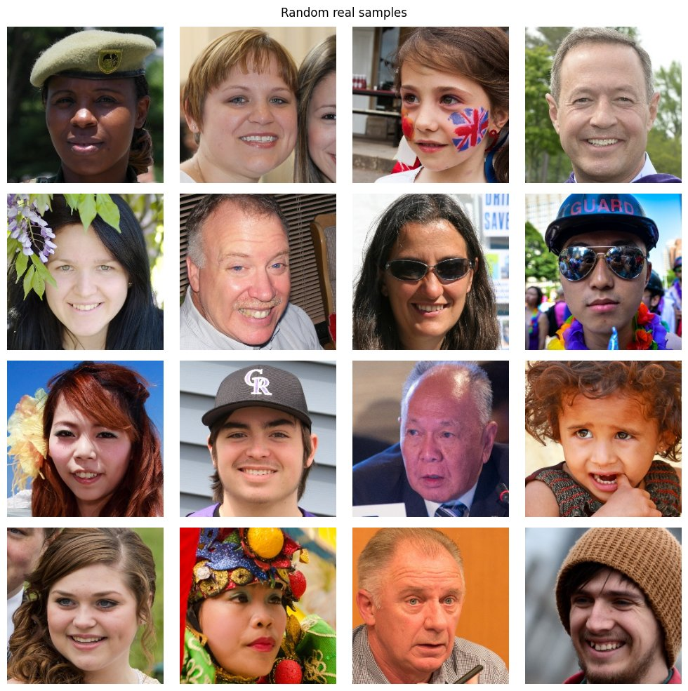
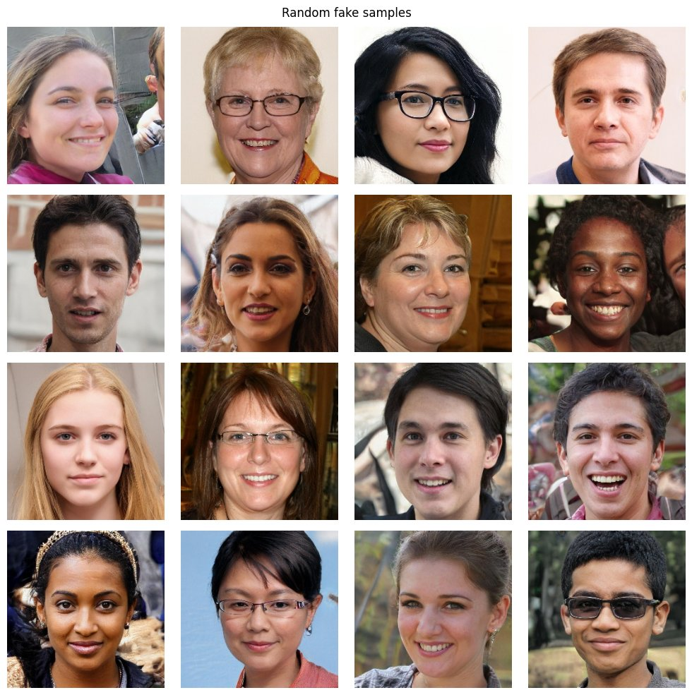
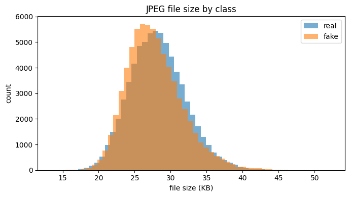
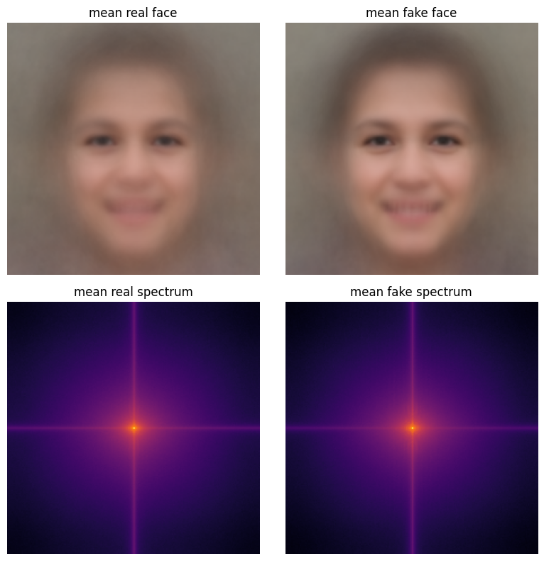
Fourier recap. The 2-D discrete Fourier transform writes an image as a sum of sinusoids, F(u,v) = Σx Σy f(x,y) · e−2πi(ux/M + vy/N); after centring, low frequencies (smooth shading) are in the middle and high frequencies (edges, fine texture, noise) towards the borders — where GAN up-sampling artifacts would appear.
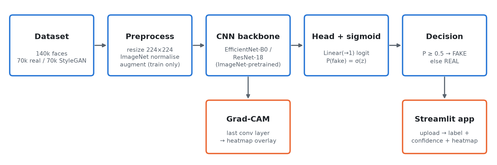
The project was built module by module, each with its own code file, notebook and documentation:
data pipeline (src/dataset.py) → EDA (src/eda.py) → models (src/model.py) → training
(src/train.py) → evaluation (src/evaluate.py) → Grad-CAM (src/gradcam.py) → app (app.py).
All shared paths and hyper-parameters live in src/config.py.
torchvision.transforms pipelines built by get_transforms(train); a custom DeepfakeDataset lists (path, label) pairs and opens images lazily; DataLoader batches 32 images, shuffles only the training set, and loads data in parallel workers.Labels: real = 0, fake = 1, stored as floats because the loss compares a real-valued logit with a float target. The sanity-check batch below confirmed correct labels and visually reasonable augmentation; the black corners introduced by rotation appear in both classes equally and therefore cannot leak the label.
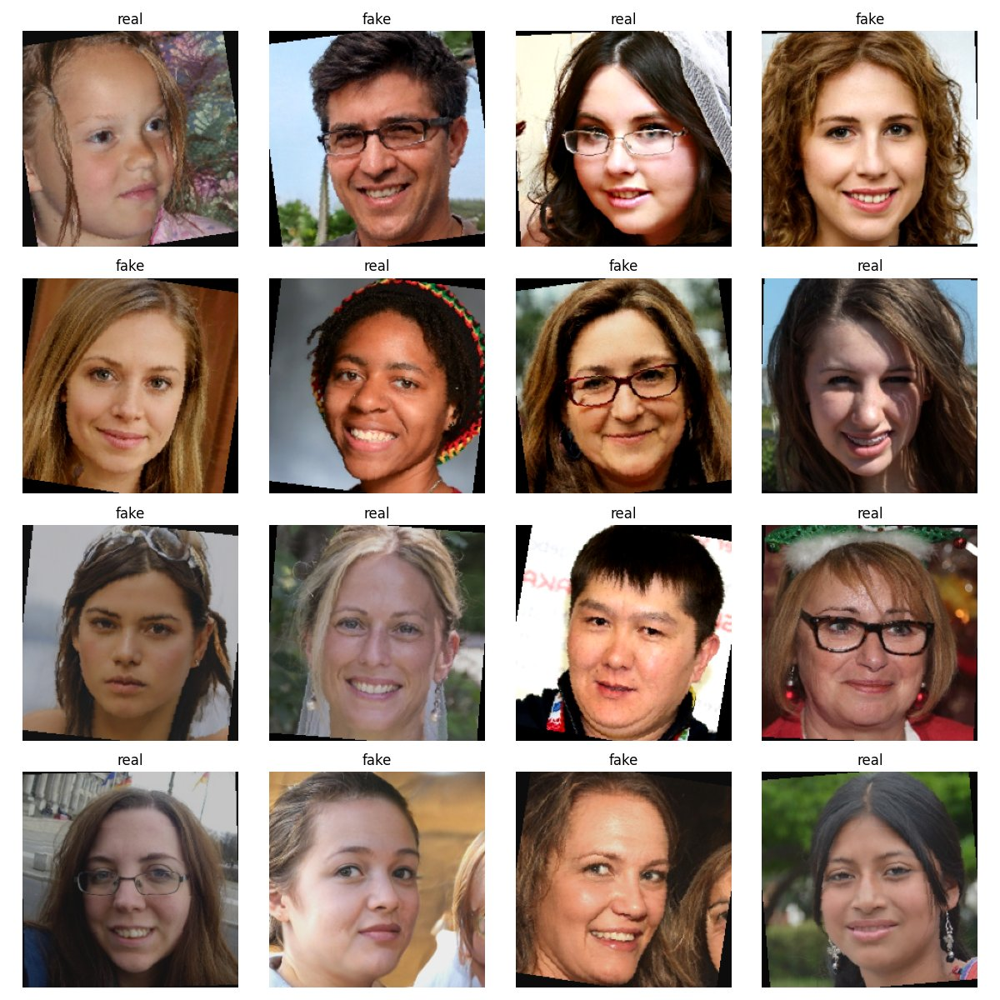
classifier[1] = Linear(1280, 1), keeping its dropout 0.2) and ResNet-18 (fc = Linear(512, 1)).src/model.py builds both with the torchvision weights API (EfficientNet_B0_Weights.IMAGENET1K_V1, ResNet18_Weights.IMAGENET1K_V1) and stores the model name inside every checkpoint so evaluation, Grad-CAM and the app can rebuild the right architecture automatically.Compound scaling sets depth d = αφ, width w = βφ and resolution r = γφ with
α·β²·γ² ≈ 2; B0 (φ = 0) is the baseline found by architecture search. Its building block, MBConv, expands
channels with a 1×1 convolution, applies a cheap depthwise k×k convolution (one filter per channel), re-weights channels
with squeeze-and-excitation (global pooling → small MLP → sigmoid gates), projects back with a 1×1 convolution and adds a
skip connection; the activation is SiLU, x·σ(x). In torchvision, features has 9 children: a stem, seven
MBConv stages (16 → 320 channels) and a final 1×1 convolution to 1280 channels, followed by global average pooling.
A 7×7 stem convolution and max-pool, then four stages (layer1–layer4, 64 → 512 channels) of two
BasicBlocks each (3×3 conv → BN → ReLU → 3×3 conv → BN, plus the identity shortcut), global average pooling and the
linear head. The shortcut means each block only learns a residual, which keeps deep networks trainable.
| Model | Parameters | GFLOPs / image | Grad-CAM target layer | Feature map |
|---|---|---|---|---|
| EfficientNet-B0 | 4,008,829 | ≈ 0.39 | features[-1] | 1280 × 7 × 7 |
| ResNet-18 | 11,177,025 | ≈ 1.8 | layer4[-1] | 512 × 7 × 7 |
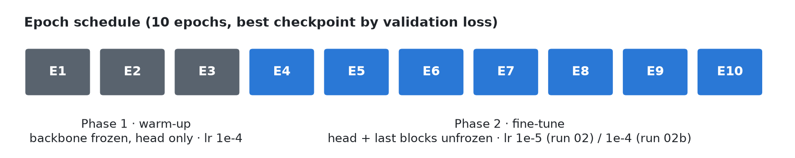
requires_grad = False; the optimiser only receives trainable parameters. Frozen BatchNorm layers are kept in eval() mode so their running statistics stay at their ImageNet values (otherwise model.train() would silently keep updating them). “Last two blocks” = features[7] + features[8] for EfficientNet and layer3 + layer4 for ResNet; the number of blocks is a command-line option (--unfreeze-blocks).| Configuration | Phase-1 trainable | Phase-2 trainable | Share of all weights |
|---|---|---|---|
| EfficientNet-B0, last 2 blocks (run 02) | 1,281 | 1,130,673 | 28% |
| EfficientNet-B0, last 4 blocks (run 02b, final) | 1,281 | 3,700,169 | 92% |
ResNet-18, layer3 + layer4 (run 02) | 513 | 10,493,953 | 94% |
BCE(y, p) = −[ y · log p + (1 − y) · log(1 − p) ], p = σ(z)
The loss is small when the predicted probability is close to the true label and grows without bound for confident
mistakes. BCEWithLogitsLoss takes the raw logit and fuses the sigmoid with the log in a numerically stable form,
which is why the network has no sigmoid layer; the sigmoid is applied only at prediction time.
m ← β₁m + (1−β₁)g, v ← β₂v + (1−β₂)g², w ← w − η · m̂ / (√v̂ + ε)
Adam keeps a running average of the gradient (momentum, smoothing noisy mini-batch gradients) and of its square (giving every parameter its own adaptive step size). It works well for fine-tuning with little tuning.
If the validation loss does not improve for one epoch, the learning rate is halved, letting the model settle into a minimum.
After every epoch the model is evaluated on the validation set; whenever validation loss reaches a new minimum the weights are
saved as <model>_best.pth — a form of early stopping that keeps the best-generalising weights even if later
epochs get worse. We select by validation loss rather than accuracy because, near 99% accuracy, loss still reflects how
confident and well-calibrated the predictions are. A full training state (_last.pth: weights, optimiser, scheduler,
history) is saved every epoch so an interrupted cloud session can --resume.
Mixed-precision training (torch.autocast + GradScaler) on the GPU roughly halves memory and speeds up
training; a fixed seed (42) makes runs reproducible — the frozen epochs of two separate EfficientNet runs matched to four decimals.
Treating fake as the positive class, with TP, TN, FP, FN from the confusion matrix:
| Metric | Formula | Question it answers |
|---|---|---|
| Accuracy | (TP + TN) / N | What fraction of all images is correct? |
| Precision | TP / (TP + FP) | When the model says “fake”, how often is it right? |
| Recall (TPR) | TP / (TP + FN) | Of all fakes, how many are caught? |
| F1 | 2PR / (P + R) | Balance of precision and recall |
| ROC-AUC | area under TPR vs FPR over all thresholds | Probability a random fake is scored above a random real image (threshold-independent) |
The test set is used once, after training. In addition we list the 25 most confident mistakes (confidence = P(fake) if predicted fake, else 1 − P(fake)) — the cases where the model was sure and wrong are the most informative for understanding its limits.
pytorch-grad-cam and, for understanding, re-implemented by hand with forward/backward hooks (manual_gradcam) — the two agree with correlation 0.99999999.The last convolutional block is chosen because it holds the most class-specific features while still preserving spatial layout (the following global pooling discards location). Its 7×7 resolution makes the heatmaps coarse.
| Component | Tool / file |
|---|---|
| Language and framework | Python 3, PyTorch, torchvision |
| Data, metrics, plots | Pillow, NumPy, pandas, scikit-learn, matplotlib |
| Explainability | pytorch-grad-cam (src/gradcam.py) |
| Demo | Streamlit (app.py) |
| Compute | Kaggle Notebooks, NVIDIA Tesla T4 GPU (free tier); laptop CPU for the app |
| Version control | Git/GitHub, one commit per module, CHANGELOG, a theory document per module in docs/ |
Cloud workflow. Each notebook clones the repository, finds the attached Kaggle dataset automatically
(config.find_kaggle_dataset() searches /kaggle/input at any depth, after Kaggle changed its mount path), and
for later stages imports the trained checkpoints from the attached output of the training notebook. Long runs were executed
as background “Save & Run All” commits; a temporary Kaggle dataset-mount failure was worked around by running evaluation
interactively.
| Setting | Value |
|---|---|
| Hardware | Kaggle, 1 × NVIDIA Tesla T4 (16 GB), 4 CPU cores |
| Input / batch size | 224 × 224 RGB / 32 |
| Schedule | 3 frozen + 7 fine-tune epochs, Adam, ReduceLROnPlateau (factor 0.5, patience 1) |
| Time per epoch | ≈ 7 min for both models (data loading bound); first epoch slower (cold disk cache) |
| Total GPU time | run 02 (both models) ≈ 3.0 h · run 02b (EfficientNet, 4 blocks) ≈ 1.5 h |
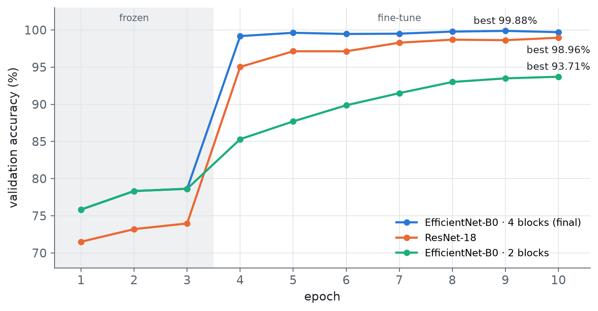
| Run | Fine-tuned | Fine-tune lr | Best epoch | Val loss | Val accuracy | Train accuracy (ep. 10) |
|---|---|---|---|---|---|---|
| 02 · EfficientNet-B0 | last 2 blocks (28%) | 1e-5 | 10 | 0.1581 | 93.71% | 91.37% |
| 02 · ResNet-18 | layer3+layer4 (94%) | 1e-5 | 10 | 0.0290 | 98.96% | 98.42% |
| 02b · EfficientNet-B0 | last 4 blocks (92%) | 1e-4 | 9 | 0.0034 | 99.88% | 99.72% |
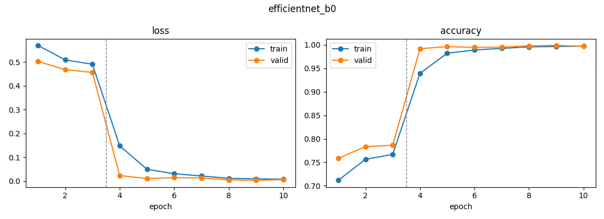
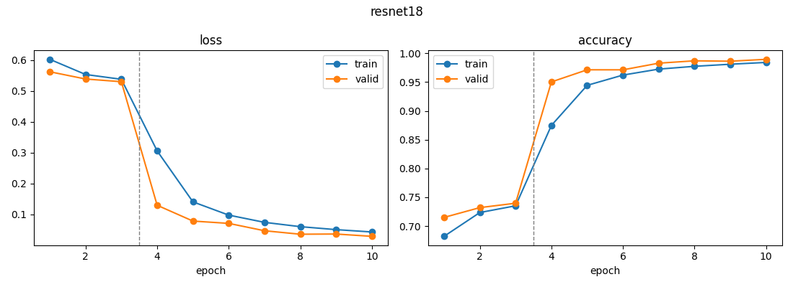
In run 02 EfficientNet-B0 clearly under-fitted: its validation loss was still falling at epoch 10 and its training accuracy
(91.4%) was even below validation accuracy (93.7%) — augmentation and dropout make training images harder than validation
images, and the model had not finished learning. The cause was the configuration, not the architecture: EfficientNet’s last
two blocks hold only 28% of its weights, whereas ResNet’s layer3 + layer4 hold 94%, so with the same
cautious learning rate ResNet adapted far more of its network. Unfreezing four blocks (92%) and using lr 1e-4 (run 02b) — both
existing command-line options, no code change — raised EfficientNet to 99.88%.
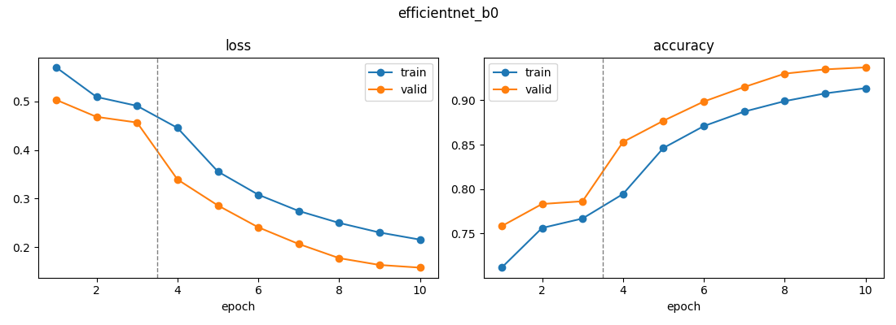
| Model | Accuracy | Precision | Recall | F1 | ROC-AUC | Errors / 20,000 |
|---|---|---|---|---|---|---|
| EfficientNet-B0 (final) | 99.84% | 99.79% | 99.88% | 99.84% | 1.0000 | 33 |
| ResNet-18 | 98.98% | 98.58% | 99.38% | 98.98% | 0.9994 | 205 |
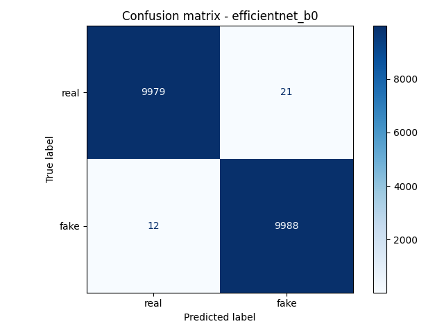
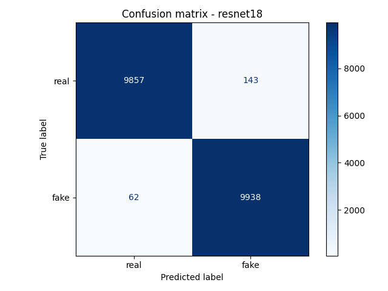
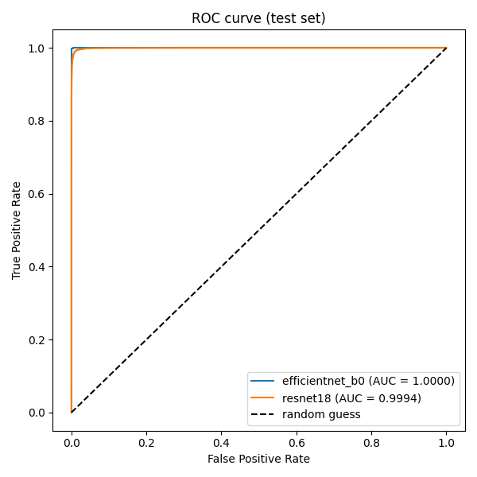
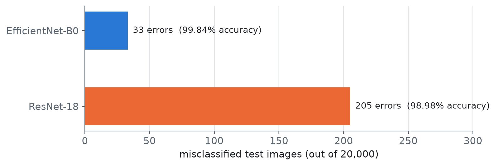
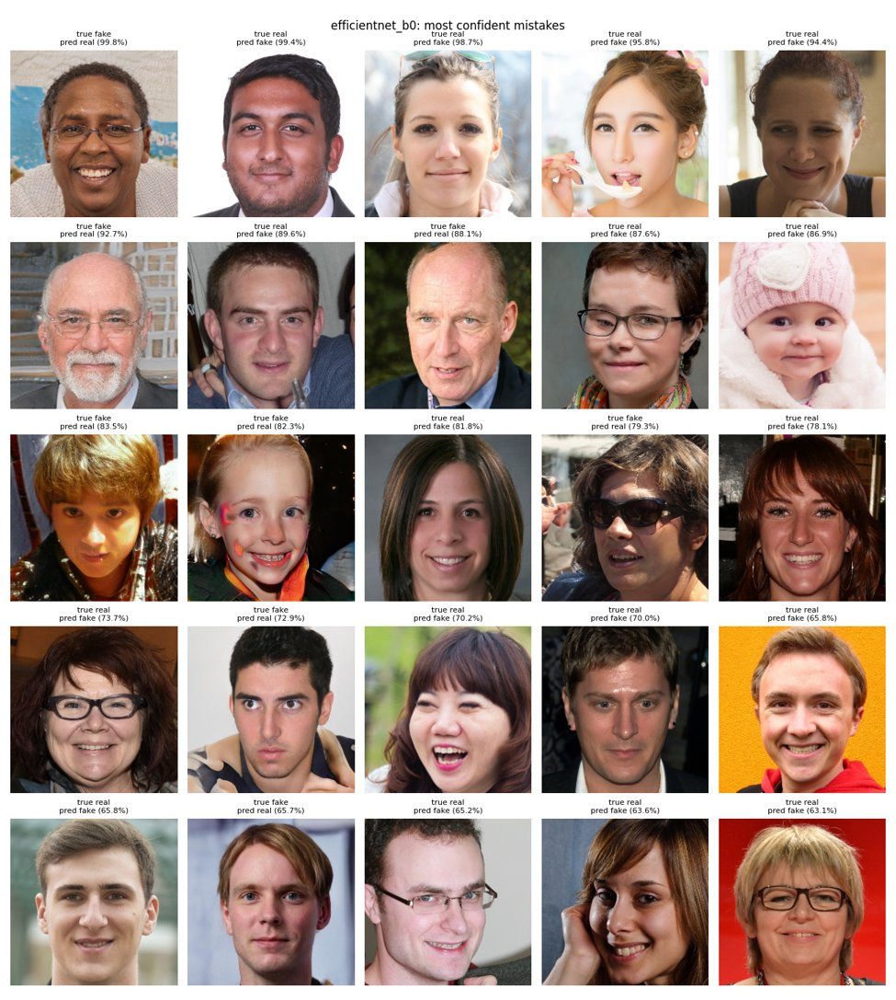
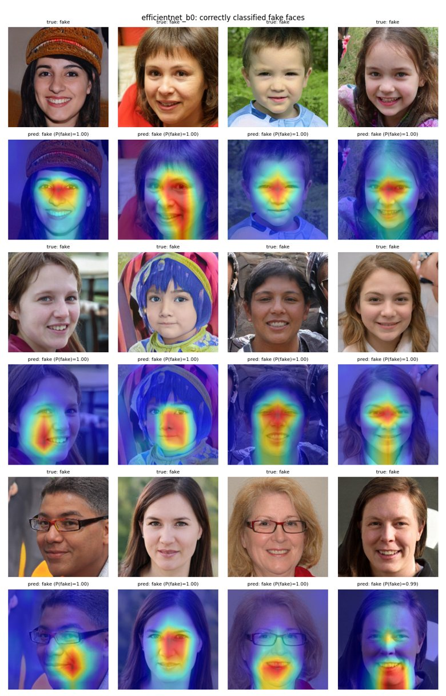
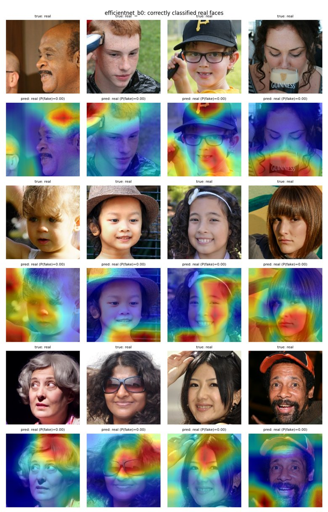
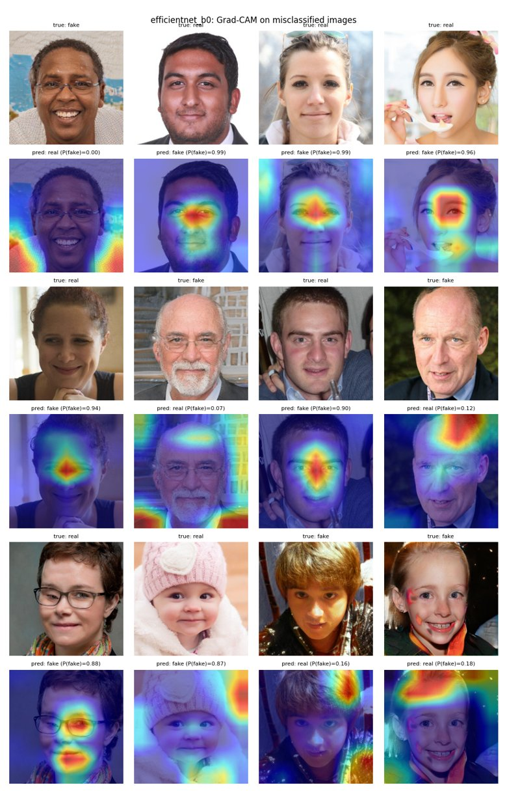
| Case | Where the model looks | Interpretation |
|---|---|---|
| Correct fakes | inner face: between the eyes, nose bridge, mouth/teeth | StyleGAN faces are aligned; the model checks texture/consistency where generator artifacts concentrate |
| Correct reals | hair, background, hats, hands, objects, borders | natural camera noise and sharp real-world context — which StyleGAN renders poorly — count as evidence for “real” |
| Real → fake errors | central face, like true fakes | clean, frontal, retouched portraits resemble StyleGAN output |
| Fake → real errors | hair, background, image edges | fakes with detailed, realistic surroundings |
The heatmaps show no trivial shortcut (no fixed corner, border or watermark), which supports that the model learned meaningful cues — but these cues are tied to StyleGAN’s aligned-face style. The hand-written Grad-CAM reproduced the library maps exactly:
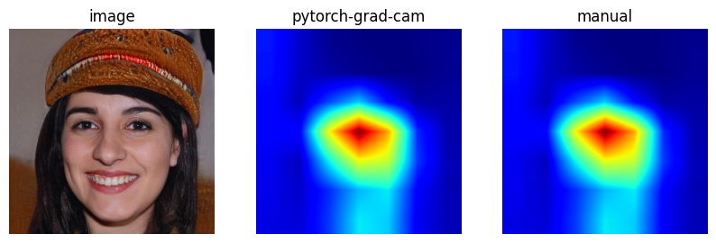
The Streamlit app (streamlit run app.py) lets the user choose a checkpoint, upload a face image, and see the
prediction (REAL/FAKE), the confidence of the predicted class, P(fake) as a bar, and the Grad-CAM overlay next to the
resized input. The input is preprocessed exactly like the validation set, the model is cached with
@st.cache_resource, and one prediction plus heatmap takes about one second on a laptop CPU. The interface is
deliberately plain: upload → predict → show result.
Out-of-distribution test. Three face images generated with ChatGPT were uploaded. All three were classified as REAL with ≈100% confidence — a confident failure. This is expected and explained in Section 6: the model has only ever seen StyleGAN fakes, ChatGPT images come from an entirely different generator, they are larger and not aligned like the training faces, and a classifier always answers with one of the two classes it knows, often with high confidence.
No. Over-fitting would show as a large gap between training and unseen-data performance; here training (99.72%), validation (99.88%) and test (99.84%) accuracies are within a few tenths of a percent, on 40,000 images the model never trained on. The accuracy is high because the task is narrow: every fake comes from one generator (StyleGAN, 2019) with a consistent fingerprint, and all faces are aligned the same way. This matches published results on the same dataset and the expectation stated in the project plan (97–99%).
| Limitation | Consequence |
|---|---|
| Single generator (StyleGAN) in training data | Fails on other generators, demonstrated with ChatGPT images |
| Aligned, cropped 256 px FFHQ-style faces only | Arbitrary photos (several faces, off-centre, large) are out of distribution; no face detector in the app |
| No robustness tests | Effect of JPEG re-compression, resizing, blur, screenshots or social-media processing is unknown and may erase the fingerprint |
| Uncalibrated confidence | High confidence on unfamiliar inputs; no “unknown” option |
| Coarse explanations | 7×7 Grad-CAM shows roughly where, not which artifact |
| Still images only | No temporal cues for video deepfakes; face swaps are a different problem |
| Small, informal OOD test | Only three ChatGPT images were tried; a systematic OOD benchmark was not run |
We built a complete, reproducible deepfake-detection pipeline — from a verified dataset through two-phase transfer learning, rigorous evaluation and Grad-CAM explanations to a working demo. The final EfficientNet-B0 detects StyleGAN-generated faces with 99.84% accuracy and ROC-AUC 1.0000 on 20,000 unseen test images, outperforming ResNet-18 with a third of the parameters once a comparable share of the network is fine-tuned. Grad-CAM shows that it inspects the inner face for generator artifacts and uses natural context as evidence for real photos. The out-of-distribution test makes the central lesson of the project concrete: near-perfect accuracy on one generator does not imply a general deepfake detector. Extending the training data to many generators, adding robustness and calibration, and using more generalisable features are the natural next steps.
# setup git clone https://github.com/Mohd2Shaan/Deepfake-Detection-Project.git cd Deepfake-Detection-Project python -m venv .venv .venv\Scripts\pip install -r requirements.txt # data and EDA python scripts/download_dataset.py python -m src.eda # training (run 02 ResNet-18, run 02b EfficientNet-B0) python -m src.train --model resnet18 python -m src.train --model efficientnet_b0 --unfreeze-blocks 4 --lr-finetune 1e-4 # evaluation, Grad-CAM, demo (http://localhost:8501) python -m src.evaluate python -m src.gradcam --checkpoint checkpoints/efficientnet_best.pth streamlit run app.py --server.headless true
On Kaggle, import the notebooks in order (01 EDA → 02 training → 02b EfficientNet 4 blocks → 03 evaluation → 04 Grad-CAM), attach the dataset (and, for 02b/03/04, the previous notebook’s output) and use Save & Run All. Each notebook’s first cell sets up the repository and finds the data automatically.
| Path | Content |
|---|---|
src/ | config.py, dataset.py, eda.py, model.py, train.py, evaluate.py, gradcam.py |
notebooks/ | executed notebooks 01, 02, 02b, 03, 04 with outputs and observations |
docs/ | theory and implementation note for every module (00–08) and result figures |
outputs/ | training histories (JSON) and generated plots |
app.py | Streamlit demo |
| Question | Short answer |
|---|---|
| Why EfficientNet over other architectures? | Best accuracy per parameter thanks to compound scaling and MBConv+SE blocks; 4 M parameters, ≈0.39 GFLOPs — and empirically 6× fewer test errors than ResNet-18 here. |
| Why transfer learning? | Pretrained low-level features transfer to any images; converges in a few epochs with less data/compute and less over-fitting. |
| Why freeze first, then unfreeze? | A random head produces large gradients that would damage pretrained features; warm it up, then fine-tune the last blocks. |
| Why did the first EfficientNet run score only 93.7%? | Under-fitting: only 28% of weights fine-tuned at lr 1e-5; 4 blocks (92%) at lr 1e-4 gave 99.88%. |
| Is 99.8% over-fitting? | No — train, validation and test accuracy agree within 0.2% on 40k unseen images; the task (one generator) is easy. |
| Why BCEWithLogitsLoss? | Binary task with a single logit; fuses sigmoid and BCE in a numerically stable way. |
| How did you avoid data leakage? | Predefined splits, no reshuffling, MD5 duplicate check (0 found), test set used only once. |
| What does ROC-AUC = 1.0 mean? | Fakes are almost always scored higher than real images, at every threshold. |
| How does Grad-CAM work? | Average the gradients of the class score over each feature map of the last conv layer, use them as weights, sum the maps, ReLU, upsample. |
| Would this work on diffusion fakes? | No — our ChatGPT test was 3/3 wrong; it needs training data from those generators or more general features. |
| Computational cost? | ≈7 min per epoch on a T4; ≈1 s per image including Grad-CAM on a laptop CPU. |
| How would you deploy at scale? | ONNX/TorchScript behind a REST API with GPU batching, face detection first, drift monitoring and periodic retraining on new generators. |